EVENT ARCHIVE · 21 Nov 2025
International Culture Festival
International students and faculty shared performances, clothing, food and cultural activities with the wider Pre-University community.
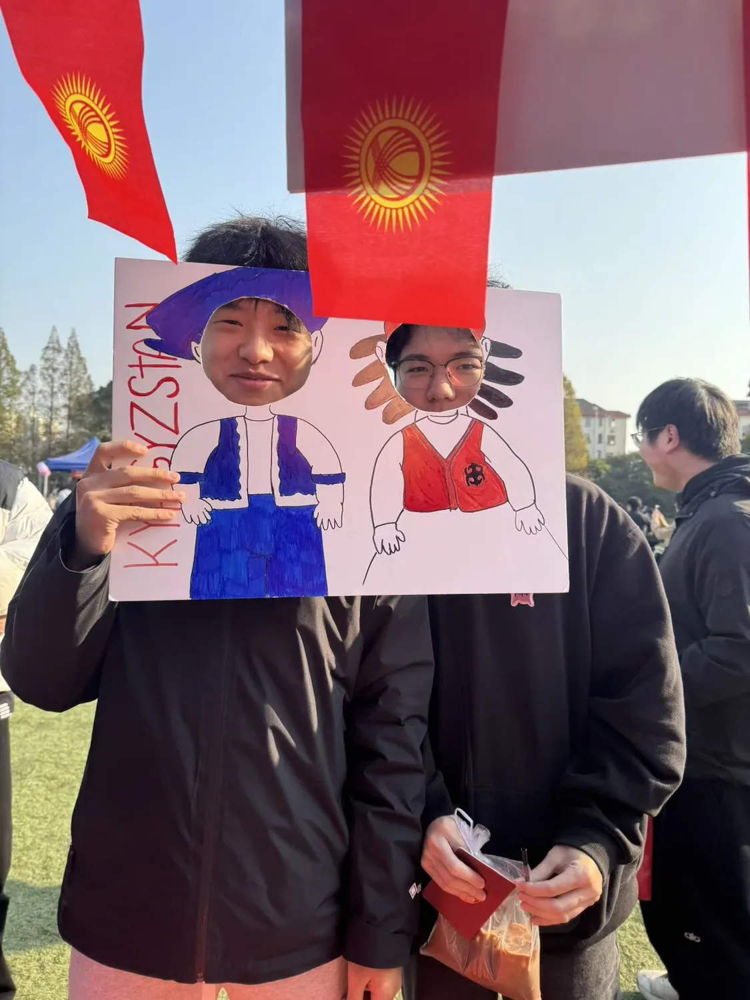
PHOTO RECORD
14 archived images.
Images are optimized copies of files supplied in the current project archive. Replace them with higher-resolution originals when available.
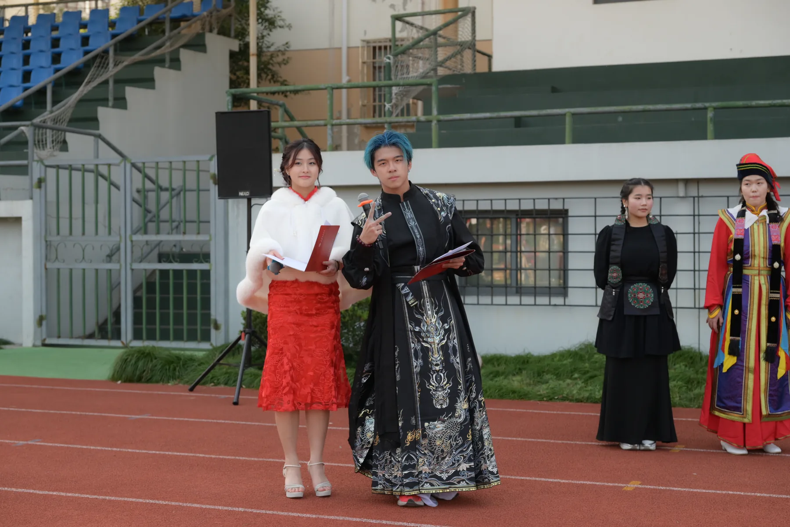
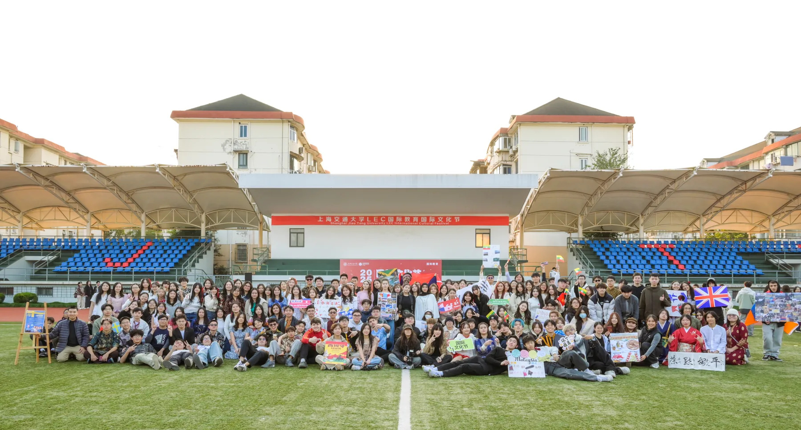
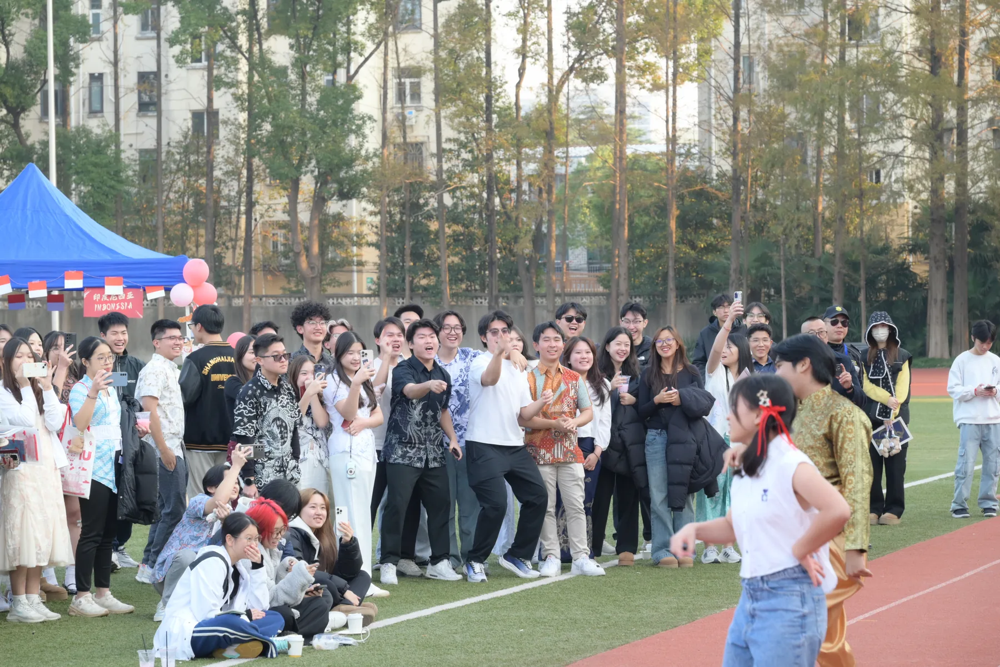
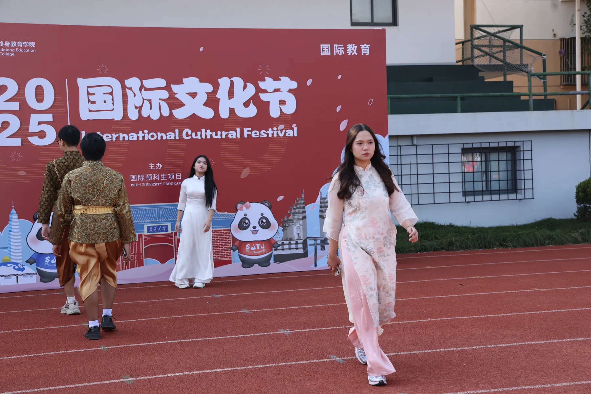
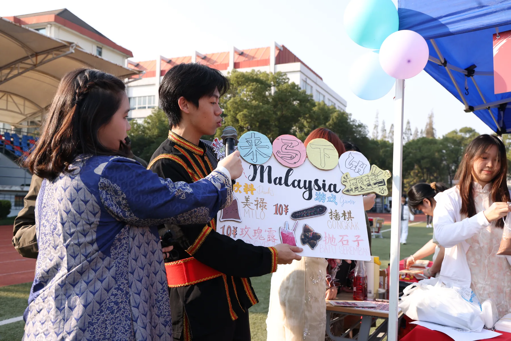
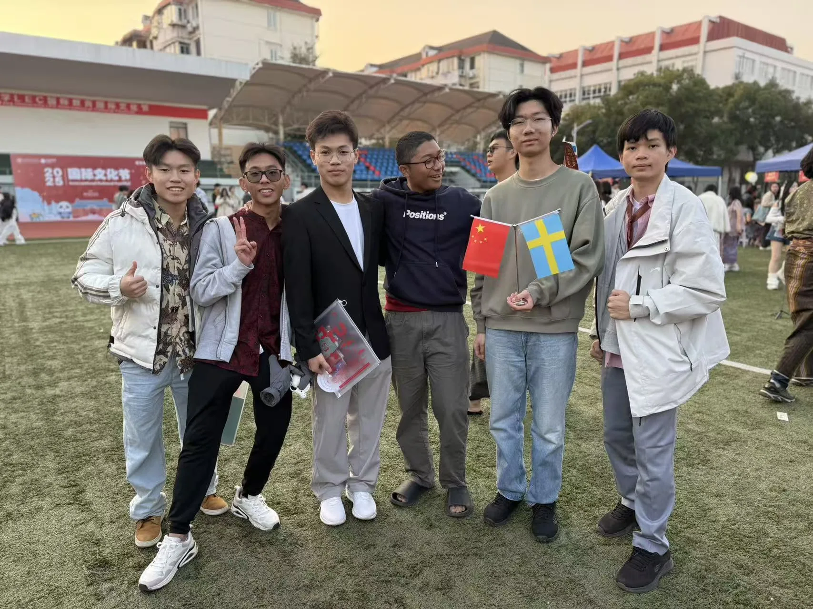
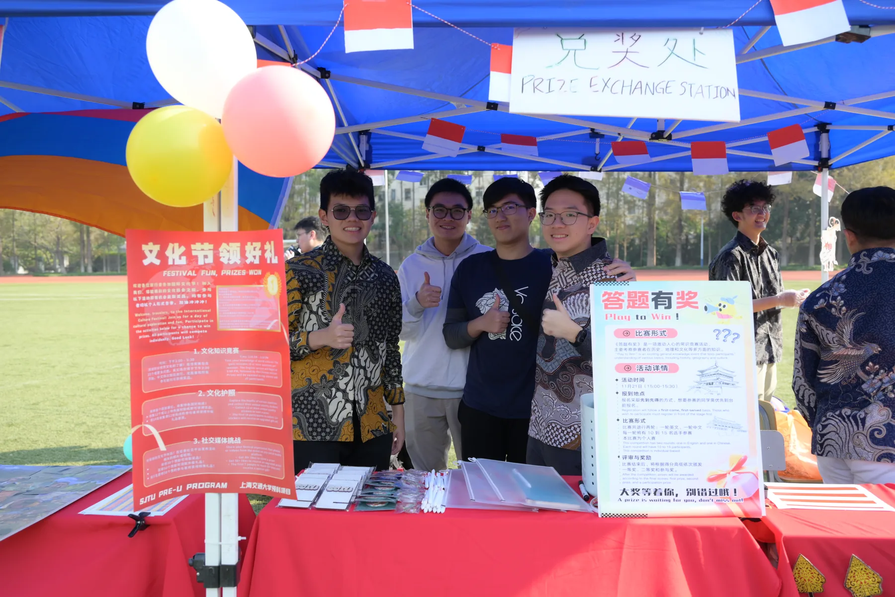
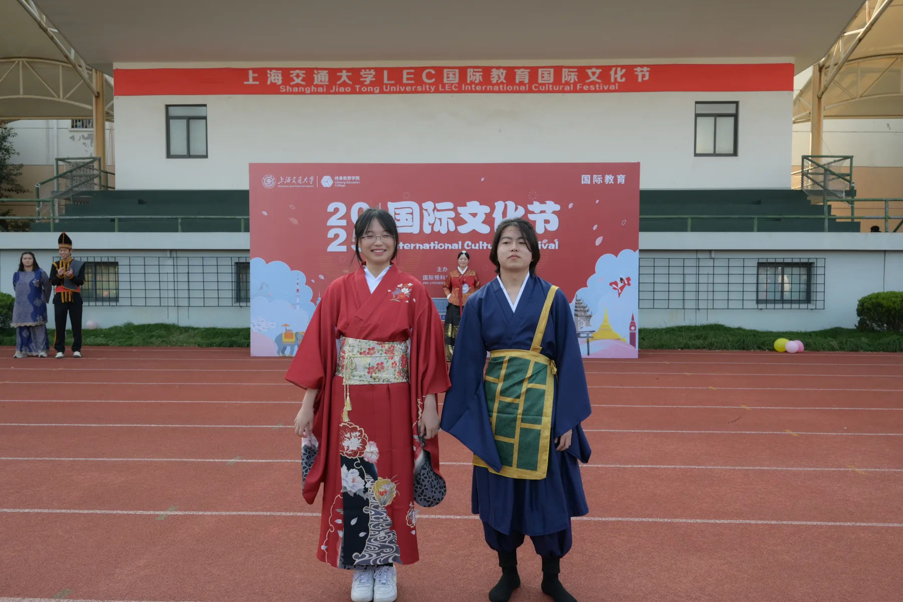
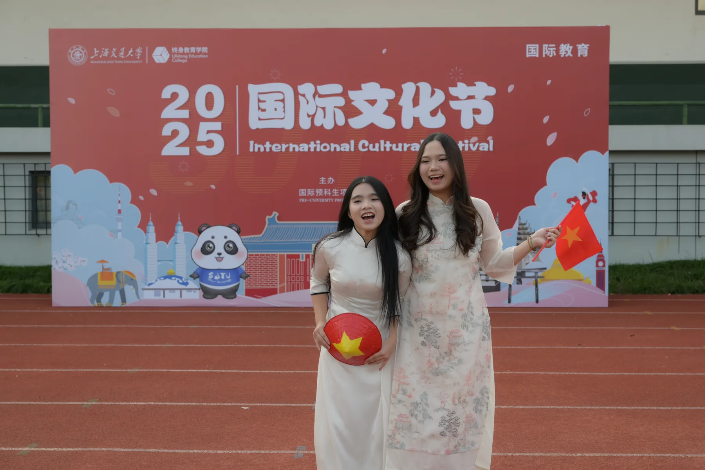
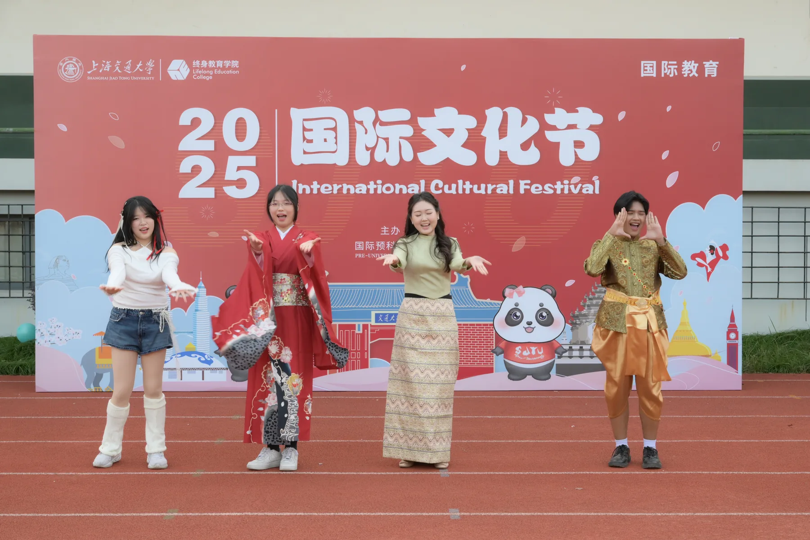
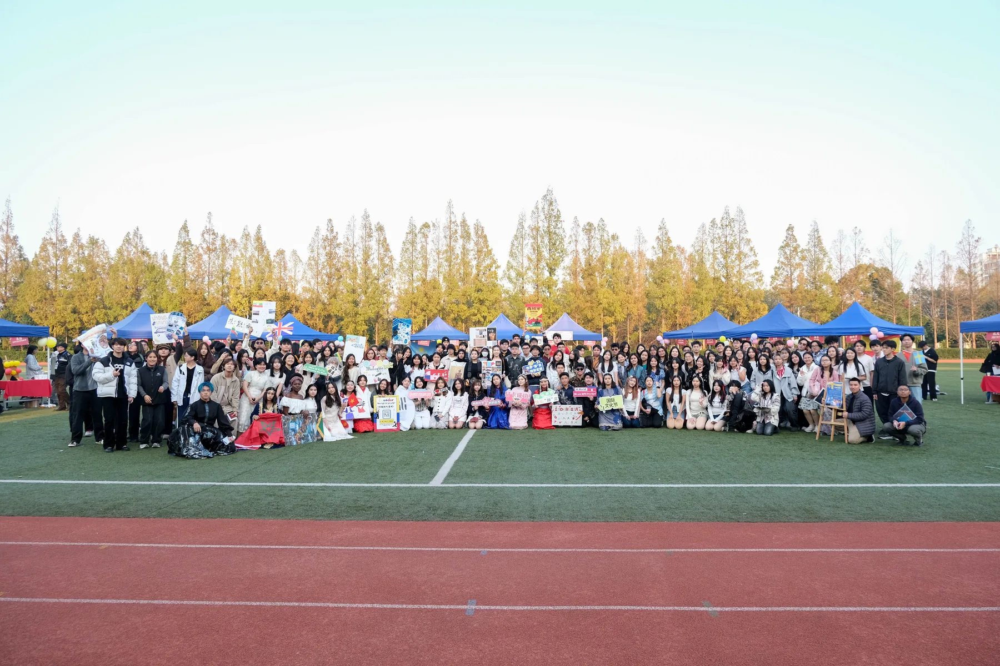
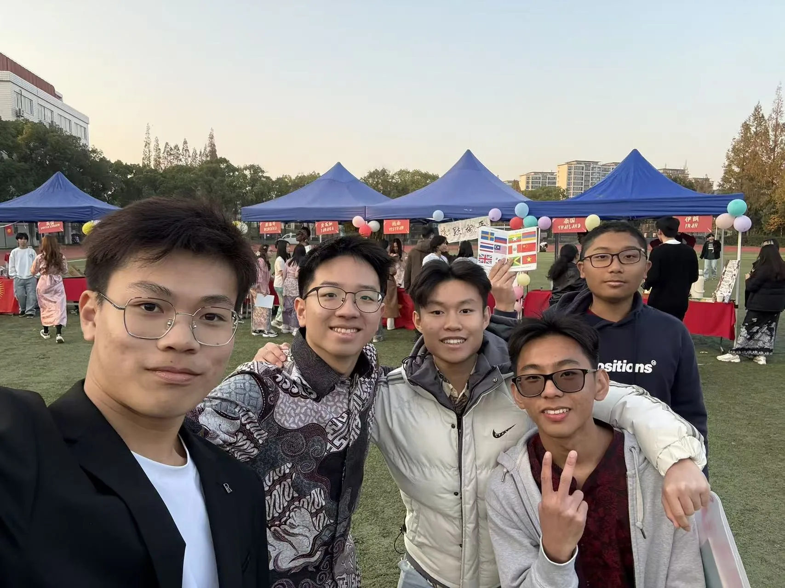